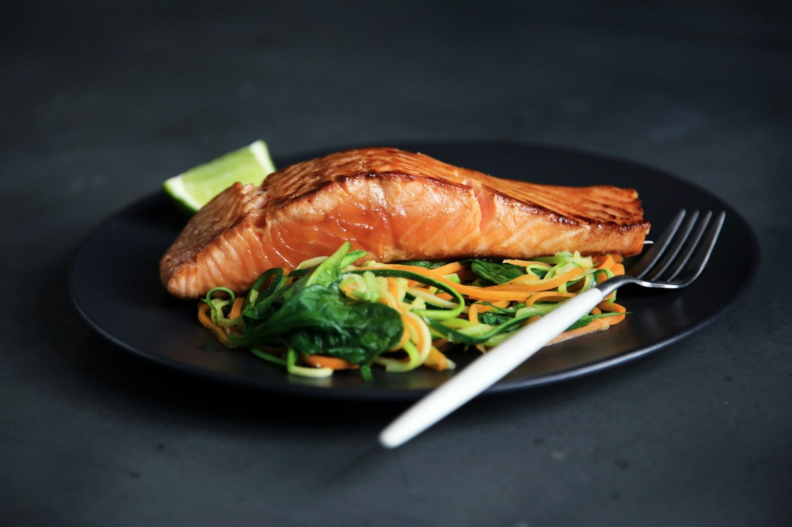

Cikk · Omega-3
Omega-3: a hal és a kapszula nem ugyanazt az ígéretet bírja el
Az EPA és a DHA a sejthártya része, és van hivatalos európai állítás a szív normál működéséről. Az egészséges felnőttek szívinfarktusának megelőzését egy nagy vizsgálat mégsem igazolta.

Mi a termék?
A három fő omega-3 zsírsav az alfa-linolénsav (ALA), az eikozapentaénsav (EPA) és a dokozahexaénsav (DHA). Az ALA főként növényi olajokban van, például len-, szója- és repceolajban. Az EPA és a DHA halban és más tengeri élelemben. Az ALA esszenciális: a szervezet nem állítja elő, ezért ételből kell hozzájutni. A szervezet az ALA egy részét EPA-vá, majd DHA-vá alakítja, de csak nagyon kis mennyiségben. Az EPA és a DHA szintjét érdemben halból, tengeri ételből vagy pótlásból lehet emelni.
Készítmények: halolaj, krillolaj, csukamájolaj és algaolaj. Az algaolaj növényi forrás. A dózisok és a formák erősen különböznek.
Jól alátámasztott Az omega-3 zsírsavak a sejthártyák alkotói. A DHA szintje különösen magas a retinában, az agyban és a hímivarsejtekben. Szerepük van a szívben, az erekben, a tüdőben, az immunrendszerben és a hormonális rendszerben is. Forrás: NIH ODS fogyasztói lap, frissítve 2022. július 18-án.
Kinek szól?
A legtöbb ember az Egyesült Államokban elég ALA-t eszik, EPA-t és DHA-t viszont csak kis mennyiségben. Ajánlott EPA- és DHA-mennyiséget a NIH szerint nem rögzítettek; ALA-ra igen, életkor és nem szerint. Omega-3-hiány ritka, durva, hámló bőrt és vörös, viszkető kiütést okozhat.
A NIH az Amerikai Szívgyógyász Társaság (AHA) álláspontját így foglalja össze: hetente egy-két adag tengeri étel csökkentheti egyes szívproblémák kockázatát, különösen ha kevésbé egészséges ételt vált ki. Szívbetegségben az AHA körülbelül napi 1 g EPA és DHA bevitelét javasolja, lehetőleg zsíros halból; a készítmény csak ellátó irányításával lehetőség. Az AHA nem javasol omega-3-készítményt annak, akinek nincs magas szív-érrendszeri kockázata.
Európában az EFSA szerint napi 250 mg EPA és DHA elég a szív normál működésének fenntartásához. Ez élettani működésről szóló állítás, nem arról, hogy a kapszula infarktust előz meg. Ugyanez a hivatalos közlés szerint a vérnyomás és a trigliceridszint fenntartására hivatkozott hatásokhoz napi 2–4 g EPA és DHA kell.
Jól alátámasztott Napi 250 mg EPA és DHA a szív normál működéséhez, az EFSA megfogalmazásában. Nem betegségmegelőzési ígéret.
Korlátozott Több EPA és DHA ételből vagy készítményből csökkenti a trigliceridszintet, írja a NIH. A hatás dózistól függ, és nem ok arra, hogy valaki magától grammnyi olajat szedjen.
Mit mond a kutatás?
Aki halat és más tengeri ételt eszik, annak több krónikus betegség kockázata alacsonyabb. A NIH szerint nem világos, hogy ez maguktól az omega-3 zsírsavaktól van-e, vagy az étkezési mintától.
A VITAL vizsgálat elsődleges megelőzést nézett: olyan amerikai felnőtteket, akiknek a belépéskor nem volt szív-érrendszeri betegségük vagy daganatuk. Napi 1 g tengeri omega-3-at kaptak. A kapszula 840 mg omega-3 zsírsavat tartalmazott, ebből 460 mg EPA-t és 380 mg DHA-t. A pótlás nem eredményezett alacsonyabb előfordulást sem a súlyos szív-érrendszeri események, sem a rák tekintetében, mint a placebo. Közlés: Manson és mtsai, New England Journal of Medicine, 2019.
Nem bizonyított Az az állítás, hogy a halolajkapszula egészséges, nem magas kockázatú felnőtteknél megelőzi a súlyos szív-érrendszeri eseményt vagy a rákot, a VITAL elsődleges eredménye alapján nem áll meg. A NIH külön is írja: egy nagy klinikai vizsgálatban az omega-3-készítmény nem csökkentette a rák összesített kockázatát, sem az emlő-, a prosztata- vagy a vastagbélrák kockázatát.
Száraz szem: egy nagy vizsgálatban napi 2000 mg EPA és 1000 mg DHA egy évig nem javította a tüneteket jobban, mint a placebo. Egy másikban napi 460 mg EPA és 380 mg DHA 5,3 évig nem befolyásolta a száraz szem kialakulásának kockázatát. A „halolaj a száraz szemre” tehát ebben a formában nem igazolt.
Korlátozott Rheumatoid arthritisben egyes klinikai vizsgálatok szerint az omega-3 a szokásos gyógyszerek mellett segíthet a betegség kezelésében; kevesebb fájdalomcsillapítóra lehet szükség. Az nem világos, hogy a készítmény csökkenti-e az ízületi fájdalmat, a duzzanatot vagy a reggeli merevséget. Csak kezelőorvossal együtt értelmezhető, nem helyette.
Hagyományos használat A csukamájolaj régóta használt házi szer. A hagyomány nem helyettesíti a fenti vizsgálatokat, és a csukamájolaj A- és D-vitamint is tartalmaz, ezért nem azonos egy sima EPA/DHA-kapszulával.
Ártalom és kölcsönhatás, röviden
Az amerikai FDA szerint étrend-kiegészítőből együttvéve ne legyen több napi 5 g EPA és DHA. A mellékhatások általában enyhék: kellemetlen szájíz, rossz lehelet, gyomorégés, hányinger, hasi diszkomfort, hasmenés, fejfájás, szagos verejték. Nagy adag omega-3 vérzési problémát okozhat warfarin vagy más véralvadásgátló mellett. Az EFSA 2012-es véleménye szerint felnőtteknél a napi legfeljebb 5 g-os kiegészítő EPA+DHA bevitel nem vetett fel biztonsági aggályt, és felső beviteli szintet (UL) nem tudtak megállapítani. Ez felső tájékoztatás, nem célérték.
Mit nem állítunk
Nem állítjuk, hogy a halolaj egészséges embernél megelőzi a szívinfarktust, a stroke-ot vagy a rákot.
Nem állítjuk, hogy az algaolaj, a krillolaj és a halolaj klinikailag felcserélhető. Erre itt nincs összehasonlító szám.
Nem javasoljuk, hogy valaki véralvadásgátló mellett orvosi egyeztetés nélkül omega-3-at kezdjen.
A 250 mg, az 1 g és az 5 g különböző kérdésekre válasz: élettani működés, egy konkrét vizsgálat adagja, illetve biztonsági tájékoztatás. Nem keverendők össze egy „szedj ennyit” mondattá.
Források
- NIH Office of Dietary Supplements. Omega-3 Fatty Acids — Consumer. Frissítve: 2022. július 18. ods.od.nih.gov
- EFSA. EFSA assesses safety of long-chain omega-3 fatty acids. 2012. július 27. Benne: 250 mg/nap a szív normál működéséhez; 2–4 g a vérnyomás és a triglicerid hivatkozott hatásaihoz; legfeljebb 5 g kiegészítő bevitel felnőtteknél. efsa.europa.eu
- Manson JE, és mtsai. Marine n−3 Fatty Acids and Prevention of Cardiovascular Disease and Cancer. N Engl J Med. 2019. PMID 30415637. NEJM · PMC6392053